Chapter 9 Shiny
Duanyue Yun, Boyu Liu
In this tutorial, we will use the cars dataset as an example to wall through the process of building a shiny app. The cars dataset contains various information about a particular car.
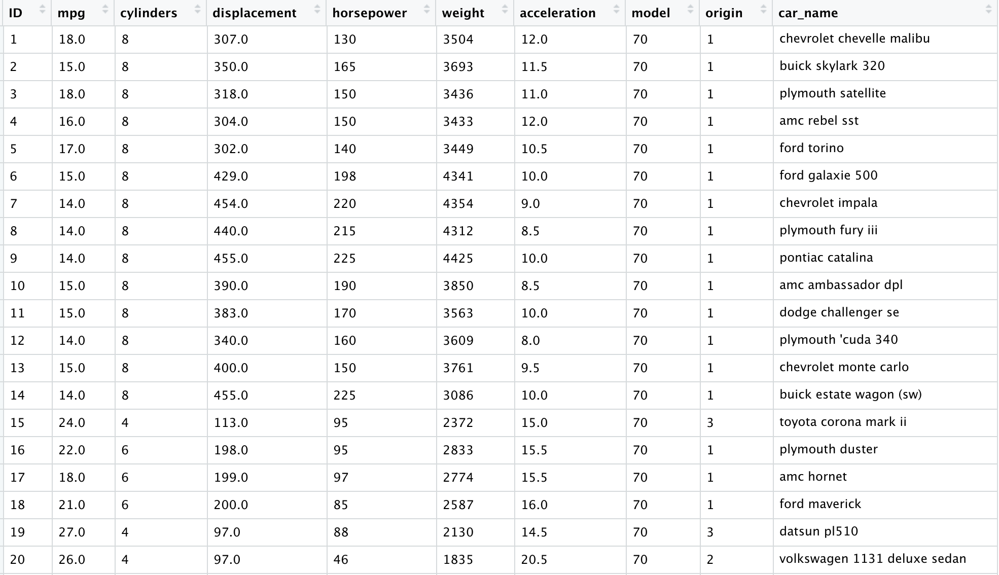
9.1 Part 1 How to Build a Shiny App
9.2 1. Install the shiny package
First of all, we can install the shiny package by running the code below.
9.3 2. Template for creating a shiny app
A shiny app consists of two main components: user interface (ui) and server instructions (server). The user interface will contain the elements that a user sees on your shiny app, which can be input (possible user interactions) and output display. The server instructions will define how the app should react to a user’s action.
Therefore, a basic template for creating a shiny app consists of 3 parts as shown below:
9.4 3. Add elements to user interface using fluidPage()
The arguments of the fluidPage() function could be Input() functions or Output() functions.
9.4.1 Input functions
Inputs define the possible ways a user can interact with our shiny App. For a numerical variable, the input could be a slider that a user can move along to select a certain value. For a categorical variable, the input could be a box where the user can select a particular category from a drop down list.
All Input() functions contain 2 required arguments: inputId = and label =. inputId is for us to identify a particular input. Later we can use the same input ID in server instructions to decide the corresponding output. Therefore, to avoid errors, it is better to give a unique name to each input. label is what the user sees on the shiny App, so it should be informative.
The common Input() functions supported are:
actionButton(), submitButton(), checkboxInput(), checkboxGroupInput(), dateInput(),
dateRangeInput(), fileInput(), numericInput(), passwordInput(), radioButtons(), selectInput(),
sliderInput(), textInput().
Each Input() function has some specific arguments. For example, the sliderInput() function requires min, max arguments to set the range of the slider and also a value argument which is the default value the user sees when the shiny app is launched. You can find more about the function using ?sliderInput().
For example, we can add a select box by running the code below.
ui <- fluidPage(
# Add a select box
selectInput(inputId = "varname",
label = "Choose a variable",
choices = colnames(cars_info)[c(2, 6, 7)]))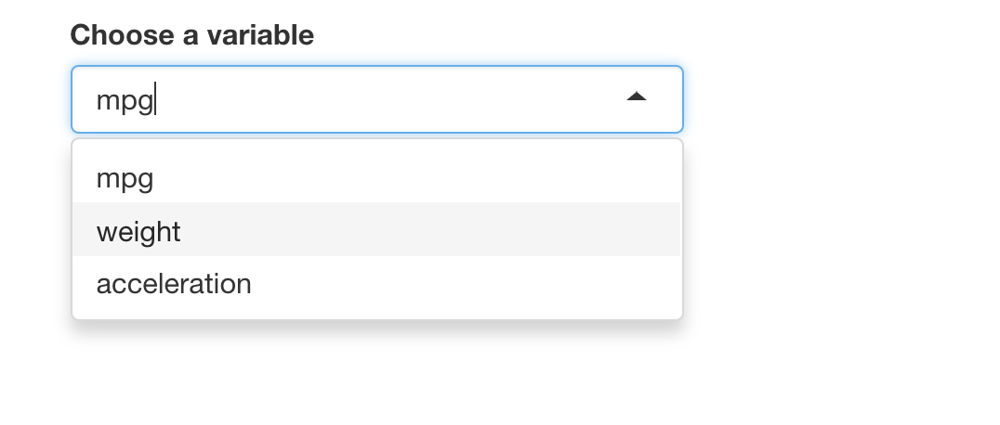
9.4.2 Output functions
We can display an output, for example a plot, by adding Output() functions to fluidPage(). Each Output() function requires one argument, which is outputId =. We will talk about how to build output in server instructions.
The common Output() functions supported are:
dataTableOutput(), htmlOutput(), imageOutput(), plotOutput(), tableOutput(), textOutput(), uiOutput(), verbatimTextOutput().
9.5 4. Build output in server instructions
9.5.1 (1): Save objects you want to display to output$
We can use the same name in the form of a string in fluidPage() to display the output.
9.5.2 (2): Build objects with render()
The render() functions that are supported include renderDataTable(), renderImage(), renderPlot(), renderPrint(), renderTable(), renderText(), renderUI().
Within render() functions, we could use {} to wrap the code so that we can write multiple lines of code to create more sophisticated output.
As an example, the following code builds a histrogram of the variable mpg to our shiny app. Remember to add it to ui() to display it in the shiny app.
server <- function(input, output) {
output$histogram <- renderPlot({
hist(cars_info$mpg, main = "", xlab = "mpg")
})
}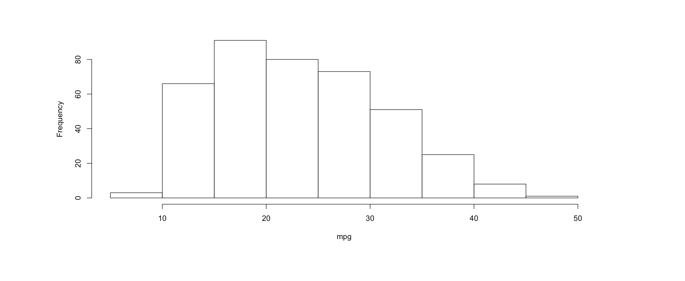
9.5.3 (3): Use input values with input$
When we use input$, the app will be interactive. For the following example, when the user selects a different variable, the histogram will change accordingly.
9.7 Part 2 How to Customize Reactions
9.8 1. Reactivity
9.8.1 What is reactivity?
Let’s think about Microsoft Excel. In Excel, we can type some value into a cell x and type a formula that uses x into a new cell y. Then whenever we change the value in x, y’s value will change correspondingly. This is reactivity, which is also what Shiny does.
Shiny has an input object input$x and an output object output$y. Any changes in input$x will cause changes in output$y.
So now let’s start with reactive values, which is where reactivity starts in Shiny.
9.8.2 Reactive values
Reactive values are what the user selects and depend on Input() functions. In the previous example where we create a select box, the reactive values are the variable that the user selects.
Note that reactive values don’t work on their own. They actually work together with reactive functions.
9.8.3 Reactive functions (reactive toolkit)
They are a kind of functions that are expected to take reactive values and know what to do with them.
They are notified that they need to re-execute whenever the reactive value changes.
They are included in the server instructions section to build (and rebuild) an object.
We can think of reactivity in R as two-step process. Consider the following example. We use input function selectInput() to get user’s choice. input$varname is the reactive value. When we choose different variables, firstly reactive values will notify the functions which use them that they become outdated. After that its job is over and it’s time for reactive functions to do their jobs, which is rebuild the corresponding object using new values. The process is automatic in shiny.
Suppose we want to output the corresponding histogram whenever the user chooses a variable.
ui <- fluidPage(
# Add a select box
selectInput(inputId = "varname",
label = "Choose a variable",
choices = colnames(cars_info)[c(2, 6, 7)]),
# Add corresponding output
plotOutput(outputId = "histogram")
)
server <- function(input, output) {
output$histogram <- renderPlot({
hist(cars_info[[input$varname]], main = "", xlab = input$varname)
})
}
shinyApp(ui = ui, server = server)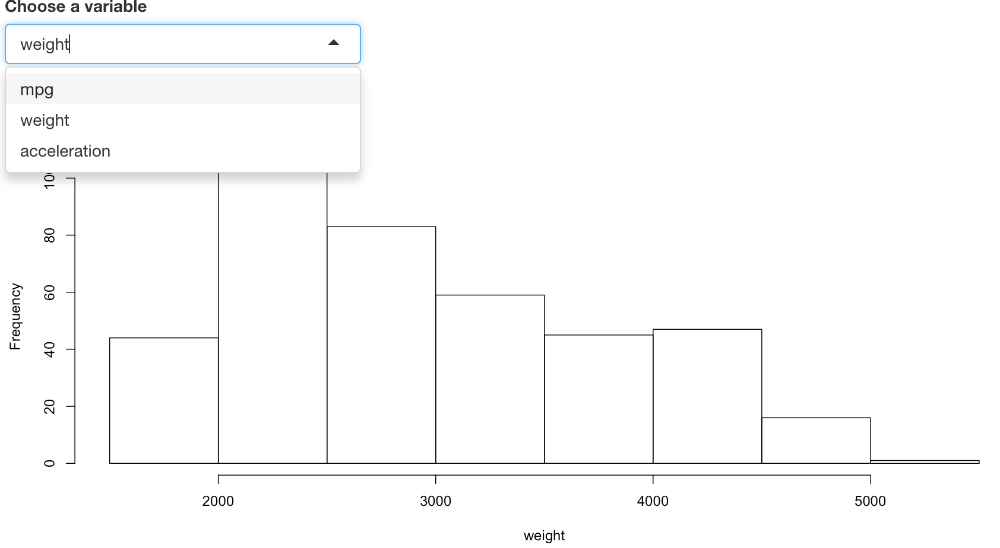
9.8.4 Modularize code with reactive()
See the example below. When the user selects a number, the shiny app plots a histogram for that number of N(0,1) variables and also computes the summary statistics. This app has only one reactive value (number the user chooses) but has two objects, a histogram and a block of text which includes the statistics of the data. When the reactive value changes, it will notify these two objects and they will rerun the code to update themself. But the probelm is that because they rerun their code successively, so rnorm(input$num) is called twice. Since rnorm is random, each object generates a different set of values, which means the histogram describes a dataset and the summary of the statistics describes another dataset.
# Before
ui <- fluidPage(
# Add a slider
sliderInput(inputId = "num", label = "Please choose a number.",
min = 1, max = 100, value = 25),
# Display the histogram
plotOutput(outputId = "hist"),
# Display the summary statistics
verbatimTextOutput("stats")
)
server <- function(input, output) {
# Build the histogram
output$hist <- renderPlot({hist(rnorm(input$num), main = "", xlab = "num")})
# Build the object that contains the summary statistics
output$stats <- renderPrint({summary(rnorm(input$num))})
}
shinyApp(ui = ui, server = server)For example, when we only select one normal variable. It is clear that the histogram and the summary statistics do not correpond to the same data.
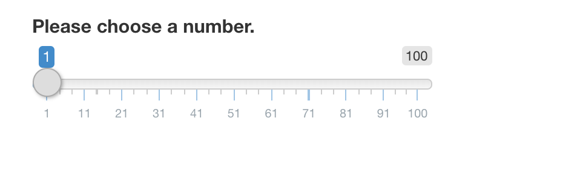 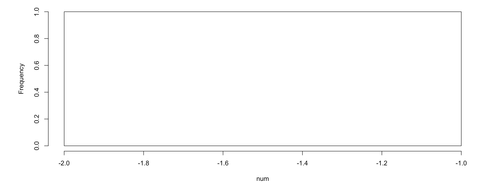 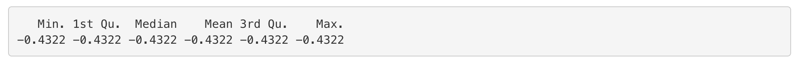
Can the two objects describe the same data? The answer is yes! The strategy is calling rnorm(input$num) only once and saving the dataset it creates. Then use this dataset downstream when we need it. Shiny provides a function called reactive(), which can wrap a normal expression to create a reactive expression and realize what we hope to achieve.
In this specific example, we add a code data <- reactive(rnorm(input$num)) to the server and replace rnorm(input$num) in the reactive functions with data(). Note that you should call a reactive expression like a function. So here we use data() instead of data.
# After
ui <- fluidPage(
sliderInput(inputId = "num", label = "Please choose a number.",
min = 1, max = 100, value = 25),
plotOutput(outputId = "hist"),
verbatimTextOutput("stats")
)
server <- function(input, output) {
data <- reactive(rnorm(input$num))
output$hist <- renderPlot({hist(data(), main = "", xlab = "num")})
output$stats <- renderPrint({summary(data())})
}
shinyApp(ui = ui, server = server)Now when will select 1 variable, the two objects will describe the same data.
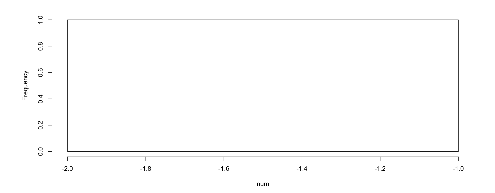 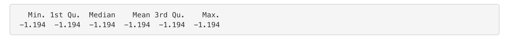
9.8.5 Prevent reactions with isolate()
Sometimes we might want to delay a reactive function. For example, the following shiny app plots a scatterplot between 2 variables of the user’s choose and also allows the user to give the plot a customized title. So there are 3 inputs: the title of the scatterplot, an x variable and a y variable. With our regular code, the title will change instantaneously as the user types.
# Before
ui <- fluidPage(
textInput(inputId = "title", label = "Enter a title", value = "displacement vs mpg"),
selectInput('xcol', 'X Variable', colnames(cars_info)[c(2, 4, 5, 6, 7)]),
selectInput('ycol', 'Y Variable', colnames(cars_info)[c(2, 4, 5, 6, 7)], selected=colnames(cars_info)[[4]]),
plotOutput('scatterplot')
)
server <- function(input, output) {
output$scatterplot <- renderPlot({
plot(cars_info[, c(input$xcol, input$ycol)], main = input$title)
})
}
shinyApp(ui = ui, server = server)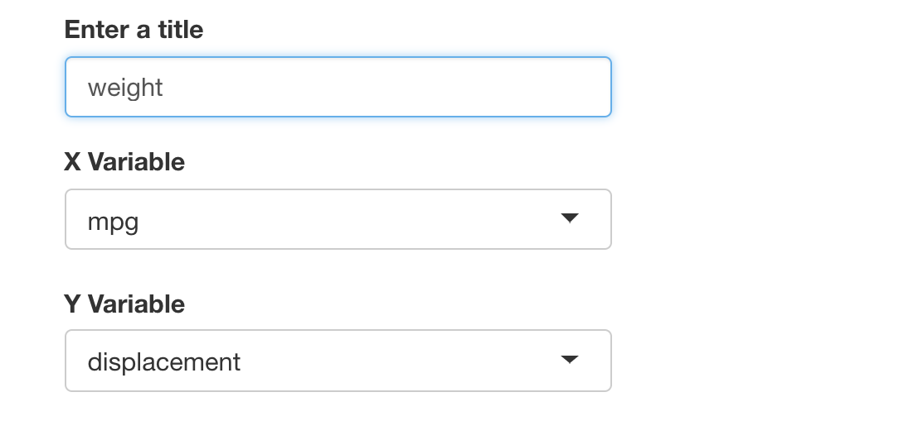 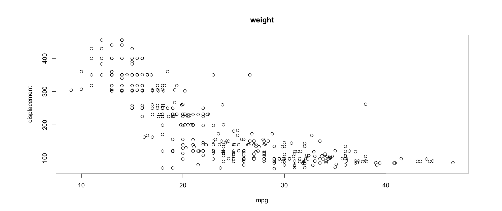
Say we do not want the title to change until the user has chosen two variables. In this case, we can use isolate() to isolate the input title. It returns the result as a non-reactive value. That means the observed object will only react to its changes when other inputs also change.
9.8.6 Trigger code with observeEvent()
we can create an action button or link whose value is initially zero, and increments by one each time it is pressed.
When we have an input like action button, we can trigger a response when the user clicks on the button by using observeEvent() function. Examples of an action button include download which allows the user to download a file.
The observeEvent() function takes two arguments: the first argument is the reactive value(s) it responds to. In our example, it will be the action button. The second armgument is a code block which runs behind the scene whenever the input changes.
Here is how we can use it in our app. Every time we click the Go! button, the observer will update, which is running the block of code print(as.numeric(input$goButton). The result won’t appear in the user panel, but to appear back of our app.
ui <- fluidPage(
actionButton(inputId = "download", label = "Download")
)
server <- function(input, output) {
observeEvent(input$downloadn, {
print(as.numeric(input$download))
})
}
shinyApp(ui = ui, server = server) 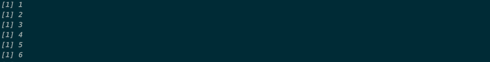
Along with observeEvent() which triggers code, there’s another function called observe(), which does the same thing and it’s a parallel of observeEvent(). But its syntax is more like render*() functions. We just give a block of code to it and it will respond to every reactive value in the code.
9.8.7 Delay reactions with eventReactive()
Sometimes we don’t want the outputs to change as soon as the user changes some input in the user interface. Instead, we would like to change them when the user clicks an ‘update’ button. In others words, we hope to prevent the output from updating until the user hits the button.
The way to do this in Shiny is with the function eventReactive(). It creates a reactive expression that only responds to specific values, similar to reactive() but having different syntax. First we give a reactive value to it. The second argument is the code the function uses to build or rebuild the object when it’s clicked. In addition, similar to observeEvent(), the expression treats this block of code as if it has been isolated with isolate().
Let’s look at the entire code.
ui <- fluidPage(
selectInput(inputId = "varname",
label = "Choose a variable",
choices = colnames(cars_info)[c(2, 6, 7)]),
actionButton(inputId = "update", label = "Update"),
plotOutput(outputId = "hist")
)
server <- function(input, output) {
data <- eventReactive(input$update, {input$varname})
output$hist <- renderPlot({
hist(cars_info[[data()]], main = "", xlab = data())
})
}
shinyApp(ui = ui, server = server)If we choose different variable without clicking Update button, the histogram would not be updated.
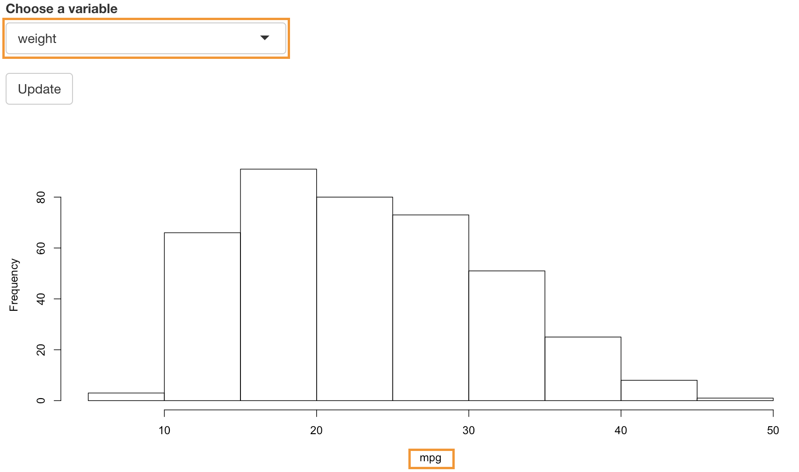
9.8.8 Manage state with reactiveValues()
We know that the reactive value changes whenever a user changes the input in the user panel. But we cannot set these values in our code. Fortunately, although Shiny doesn’t give us the power to overwrite the input values in our app, it gives us the power to create our own list of reactive values, which you can overwrite.
reactiveValues() is a function that creates a list of reactive values to manipulate programmatically. Note that it has nothing to do with input reactive values.
Let’s look at an example. If we click mpg vs displacement, the Shiny app would select column mpg and displacement from the cars_info dataset and plot a scatter plot for them. If we click mpg vs weight, it would select column mpg and weight from the cars_info dataset and plot a scatter plot for them.
ui <- fluidPage(
actionButton(inputId = "scatter1", label = "mpg vs displacement"),
actionButton(inputId = "scatter2", label = "mpg vs weight"),
plotOutput("scatter")
)
server <- function(input, output) {
rv1 <- reactiveValues(data = cars_info[,2], label = "mpg")
rv2 <- reactiveValues(data = cars_info[,4], label = "displacement")
observeEvent(input$scatter1, {
rv1$data <- cars_info[,2]
rv1$label <- "mpg"
rv2$data <- cars_info[,4]
rv2$label <- "displacement"
})
observeEvent(input$scatter2, {
rv1$data <- cars_info[,2]
rv1$label <- "mpg"
rv2$data <- cars_info[,6]
rv2$label <- "weight"
})
output$scatter <- renderPlot({
plot(rv1$data, rv2$data, xlab = rv1$label, ylab = rv2$label)})
}
shinyApp(ui = ui, server = server)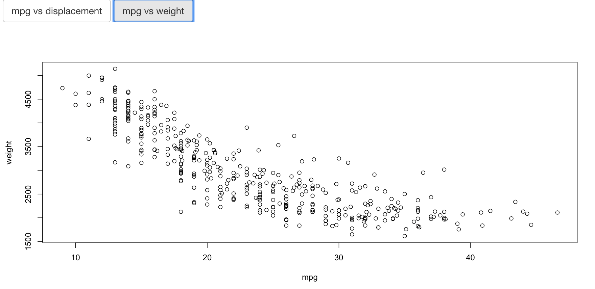
9.9 3. Summary
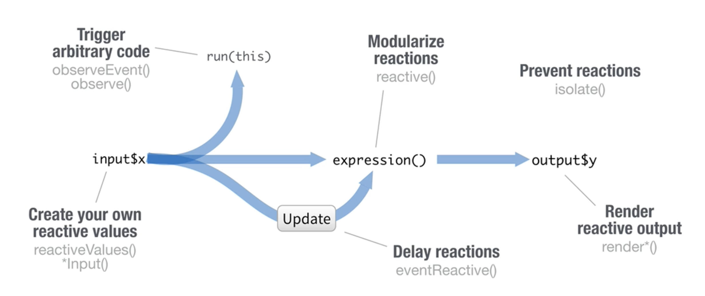
Till now, We have learnt both syntax and usage of the basic reactive functions in Shiny. Now there are still some important tips we need to provide.
We should reduce repetition when we create shiny apps. That is to place code where it will be re-run as little as necessary. Keep in mind that,
Code outside the server function will be run once per R session (worker). So you only need it to run once when setting up the R session, outside the server function. For example, codes that load the help file or some library should be placed outside the server function.
Code inside the server function will be run once per end user session (connection).
Code inside the reactive function will be run once per reaction, which means many times.
If you are interested in Shiny and would like to learn more about it, you can go to the official website or download the documentation of Shiny. The relevant resources are listed below.
- Official website: https://shiny.rstudio.com/
- Documantation of pacakge “Shiny”: https://cran.r-project.org/web/packages/shiny/shiny.pdf
- Share your Shiny apps: https://www.shinyapps.io/
- Shiny cheat sheet: https://shiny.rstudio.com/images/shiny-cheatsheet.pdf
The main source of this tutorial is the video on the Shiny official website. We adapted it with some new examples based on the cars dataset. Hope this can help you and any suggestion is welcome.